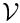
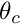
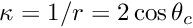

We consider a closed rectangular container of unit width that contains two immiscible fluids at rest. The lower fluid is of a prescribed volume  and the interface between the two fluids meets the wall of the container at a contact angle . In the absence of any body forces or external forces, a static solution is obtained in which the velocity field is zero, the fluid pressure in each layer is constant, and free surface is of constant curvature (an arc of a circle in two-dimensions), set by the contact angle and the geometry of the domain. From simple geometry, the mean curvature of the interface in the present problem is .
We shall be rather brief in our discussion of this problem because it is extremely similar to the static free surface bounding a single layer of viscous fluid. In fact, the main difference is that the region of upper fluid is no longer treated as a single external pressure, but must be meshed so that the Navier–Stokes equations can be solved within it. In fact, the most significant difference between the two problems is that we need to construct a two-layer mesh. Dynamic two-fluid problems are introduced in another tutorial, but the static problem discussed here is again complicated by the need to enforce a constant volume constraint.
Unlike the equivalent single-fluid problem , there is no external pressure, so the volume constraint must be associated with an internal pressure degree of freedom. Thus, we must hijack a pressure variable and we choose to do so in the upper fluid.
In addition, we must fix another fluid pressure at a fixed reference value so that the problem is non-degenerate. It is conceptually appealing to fix the reference pressure in the other (lower) fluid because the (constant) pressure in the upper fluid is already "being set" by the volume constraint.
The method of enforcing the contact angle constraint is exactly the same as discussed in the single-layer tutorial.
We must create a two-layer elastic mesh that will allow us access to the elements in each fluid. We will also need to set the volume constraint by adding ElasticLineVolumeConstraintBoundingElements to the boundaries that surround one of the fluids and to add the ElasticLineFluidInterfaceElements along the interface. Thus, we need to change the boundaries of the existing mesh.
We begin by inheriting from the ElasticRectangularQuadMesh.
The arguments to the constructor specify the number of elements in the horizontal direction and in each layer and also the width of the container and the height of each layer. The remaining arguments determine whether the mesh should be made periodic in the x direction and are the TimeStepper object.
We provide separate storage for elements above and below the interface
and the elements adjacent to the interface in the upper and lower fluid.
We will use these elements adjacent to the interface to construct the ElasticLineFluidInterfaceElements and it is important that we only add one layer of interface elements, as discussed in another tutorial.
We next change the number of boundaries
and then reassign the existing boundary nodes to the new numbering scheme. This is tedious and not terribly instructive, so is not shown, but it's all in the code if you want to see how it's done.
Finally, we add the nodes to the new interface boundary and setup the lookup schemes for the bulk elements adjacent to the new boundaries.
The problem class is extremely similar to that in the singer-layer problem. The main differences are that the ElasticTwoLayerMesh is used instead of the ElasticRectangularQuadMesh and the boundary conditions are modified to take the new boundary numbering into account. In addition, the free surface elements and volume constraint elements are created using the lookup schemes in the ElasticTwoLayerMesh to ensure that only a single layer of elements are included on the free surface. If we used the lookup schemes assigned by the generic function Mesh::setup_boundary_element_info() bulk elements on both sides of internal boundaries will be included, so we would construct twice as many interface elements as required.
SpineElements are used. Happily, the answers produced by both formulations are the same.Mesh::boundary_element_pt() function to construct the interface elements. What happens? Why?A pdf version of this document is available.